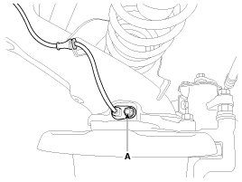
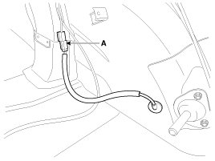
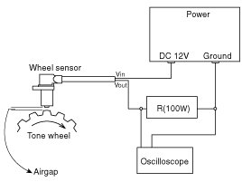
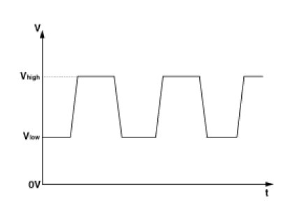

Repair Procedures
Removal
1. Remove the rear wheel and tire.
Tightening torque:
88.3 - 107.9 N.m (9.0 - 11.0 kgf.m, 65.1 - 79.6 lb-ft)
2. Remove the rear wheel speed sensor mounting bolt (A).
Tightening torque:
6.9 - 10.8 N.m (0.7 - 1.1 kgf.m, 5.1 - 8.0 lb-ft)

3. Remove the rear wheel speed sensor cable mounting bolt.
4. Remove the rear seat back.
5. Disconnect the rear wheel speed sensor connector (A), and than remove the rear wheel speed sensor.

6. Installation is the reverse of removal.
CAUTION:
Install the rear sensor after lubricating the O-ring of sensor with the assembly fluid(RAREMAAF-1)
When inserting the sensor, take care the O-ring not to be damaged.
Inspection
1. Measure the output voltage between the terminal of the wheel speed sensor and the body ground.
CAUTION:
In order to protect the wheel speed sensor, when measuring output voltage, a 100 Ohms resister must be used as shown.

2. Compare the change of the output voltage of the wheel speed sensor to the normal change of the output voltage as shown below.

V_low :0.59V ~ 0.84V
V_high :1.18V ~ 1.68V
Frequency range :1 - 2,500Hz